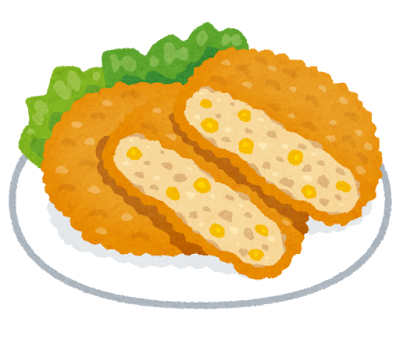
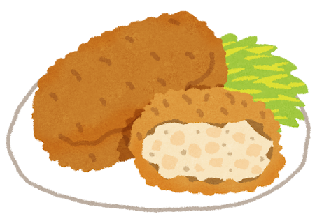
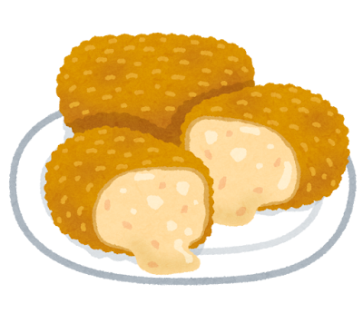
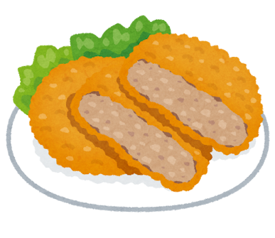
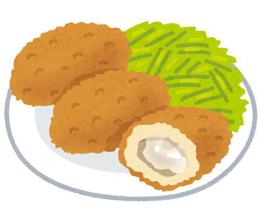
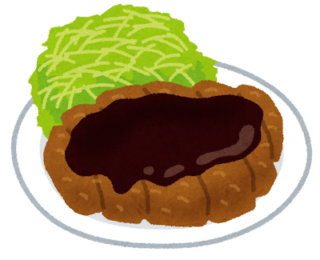

Korokke and Furai: Japan’s Deep-Fried Western Heritage

The Furai Revolution
The word furai (フライ) comes from the English “fry,” and it describes a whole category of yoshoku cooking: Western-style breaded and deep-fried foods coated in flour, egg, and panko breadcrumbs. Panko — those distinctively light, flaky, shard-like breadcrumbs — is itself a Japanese invention, created using an electrical current to bake crustless white bread, then shredding it into airy flakes. Panko is now used worldwide, a quiet Japanese contribution to global cooking.
The furai tradition began in the Meiji era when Western-style restaurants introduced European fried dishes. Japanese chefs refined the technique to produce an impossibly light, shattering crust that stays crispy far longer than traditional Western breading.
The Classics
Korokke (コロッケ)
Japan s version of the French croquette: creamy mashed potato mixed with ground meat, onion, and sometimes corn or curry, shaped into ovals, breaded in panko, and deep-fried until golden. Sold everywhere from high-end butcher shops to convenience stores, korokke is the ultimate walking snack.



Kani Cream Korokke (カニクリームコロッケ)
The crown jewel of the korokke family: a shell of crispy panko encasing a molten, creamy bechamel sauce studded with crab meat. Breaking through the crust to find the flowing cream inside is one of yoshoku s greatest pleasures.
Menchi Katsu (メンチカツ)
A breaded and fried patty of seasoned ground meat — like a hamburg steak wrapped in a crispy coat. The juices are sealed inside by the crust, making each bite an explosion of flavor. A beloved item in depachika (department store basement food halls) across Japan.

Kakifurai (カキフライ)
Breaded and deep-fried oysters — a winter seasonal favorite. Plump Hiroshima or Miyagi oysters, still briny from the sea, encased in a panko shell and served with tartar sauce and a wedge of lemon. The combination of crispy exterior and the soft, oceanic oyster within is extraordinary.

Miso Katsu (味噌カツ)
A Nagoya specialty: a thick pork cutlet drenched in a sweet, savory red miso sauce. Where Tokyo serves tonkatsu with thin Worcestershire-based sauce, Nagoya goes bold with the rich, almost chocolate-like depth of hatcho miso.

Japan did not just borrow the croquette — it perfected the art of frying itself, giving the world panko in the process.